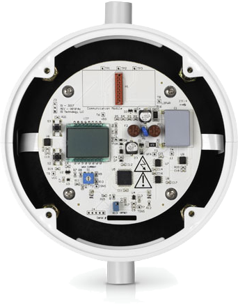
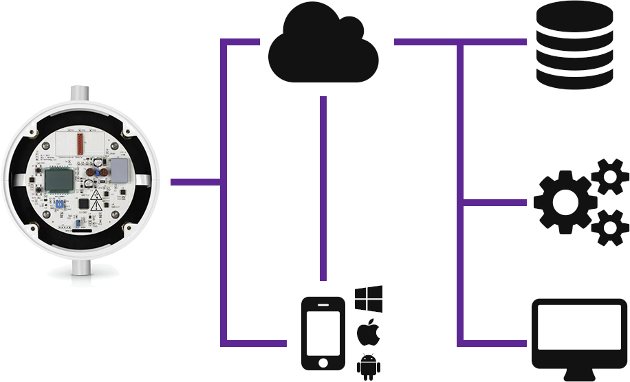

Open Sourcing
User Experience
for the Internet of Things
Ivan Judson, PhD | Felix Rieseberg | Ville Rantala
Open Source Engineers, Microsoft
We Have to Build the
User Experience Together
Data Collection
Users Communities Society
We want to learn from the data collected.
Architecture
Moving Parts
Hardware
Software
Data
Security
That's a lot we all have to build
Example
Heatworks

Heatworks Architecture

We Propose A Proven Solution
Open Source & Collaboration
Success in three steps
Open Source, Data & APIs
Build Partnerships
Grow Communities
We write Open Source, MIT-Licensed Code
We work with Startups, Communities & Corporations
We solve Problems
As it turns out, the Internet of Things has many challenges.
Demo Time!
Windows 10 & AllJoyn
Cordova & AllJoyn
Cloud & AllJoyn
Please Get In Touch!
Ivan R. Judson, PhD
Felix Rieseberg
Ville Rantala